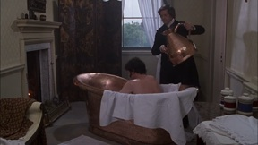
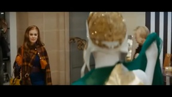

ROMANCE
R-rated
X-rated
Filter
|
↑
♬
Twilight (2008) | Piano Scene
The Notebook (2004) | It's Not Over
A Walk To Remember (2002) | Only Hope
Memoirs of a Geisha (2005) | Hatsumomo
Titanic (1997) | The Boat Leaving The Port
Brooklyn (2015) | Eilis tells Tony she loves him
Pride and Prejudice (2006) | Elizabeth Rejects Mr. Darcy in the Rain

Pride and Prejudice (1995) | Mr Darcy takes a bath
500 Days of Summer (2009) | All That True Love Nonsense
Romeo and Juliet (1968) | Balcony Scene

Confessions Of a Shopaholic (2009) | Green Scarf
Sex In The City (2008) | Carrie and her Closet
Play